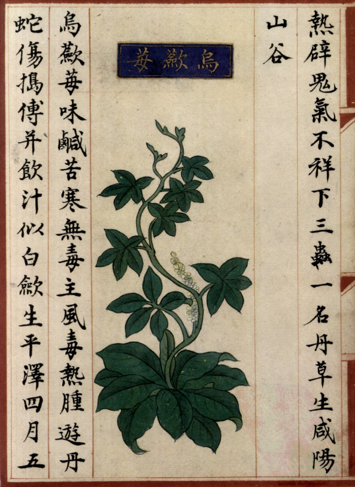

出现篇目
别名 白草（《本经》）、白根（《别录》）、兔核（《本经》）、猫儿卵（《纲目》）、昆仑（《别录》）。
古代记载
《毛诗正义》
陆机《疏》云：蔹似栝楼，叶盛而细，其子正黑如燕薁，不可食也。幽州人谓之乌服。其茎叶煮以哺牛，除热。（《毛诗正义》疏《葛生》）
《毛诗草木鸟兽虫鱼疏》
蔹，似栝楼叶，盛而细，其子正黑如燕薁，不可食也。幽州人谓之乌服，其茎叶煮以哺牛，除热。
《本草纲目》
《别录》曰∶白蔹生衡山山谷。二月、八月采根，曝干。
弘景曰∶近道处处有之。作藤生，根如白芷，破片竹穿，日干。
恭曰∶根似天门冬，一株下有十许根，皮赤黑，肉白，如芍药，不似白芷。
保升曰∶蔓生，枝端有五叶，所在有之。
颂曰∶今江淮及荆、襄、怀、孟、商、齐诸州皆有之。二月生苗，多在林中作蔓，赤茎，叶如小桑。五月开花，七月结实。根如鸡鸭卵而长，三、五枚同一窠，皮黑肉白。一种赤蔹，花实功用皆同，但表里俱赤尔。"

<补遗雷公炮制便览>